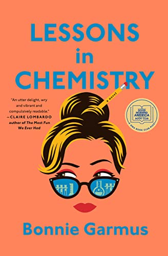

#1 Best List
jonnywalker11
This handpicked selection features must-read books that encompass captivating stories, insightful non-fiction, and remarkable classics. Embark on a literary journey filled with hidden gems, and explore the world of literature through the eyes of a passionate reader.

Fourth Wing by Rebecca Yarros
Violet Sorrengail is urged by the commanding general, who also is her mother, to become a candidate for the elite dragon riders.
Lessons In Chemistry by Bonnie Garmus
A scientist and single mother living in California in the 1960s becomes a star on a TV cooking show.

Blood Lines by Nelson DeMille and Alex DeMille
The second book in the Scott Brodie and Maggie Taylor series. After a mission in Venezuela, Brodie and Taylor search for the murderer of a fellow agent.
Judgment Prey by John Sandford
The 33rd book in the Prey series. Davenport and Flowers investigate the murder of a federal judge and his two young sons.
Wildfire by Hannah Grace
The second book in the Maple Hills series. Two summer camp counselors who previously had a one-night stand may run afoul of the camp’s rules.
Holly by Stephen King
The private detective Holly Gibney investigates whether a married pair of octogenarian academics had anything to do with Bonnie Dahl’s disappearance.